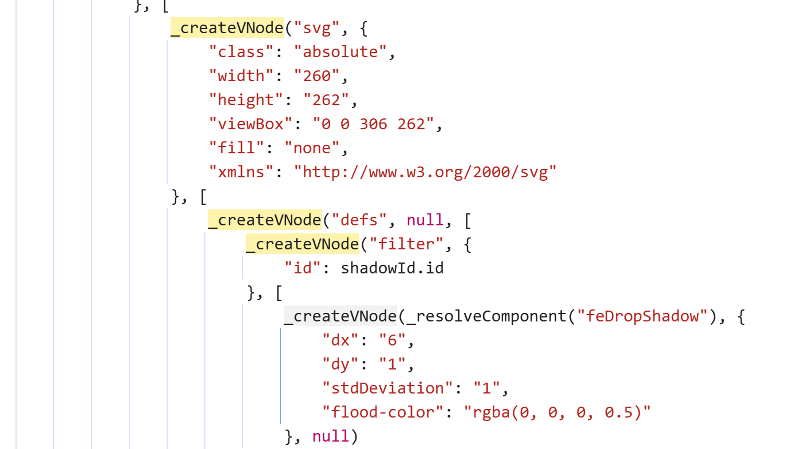
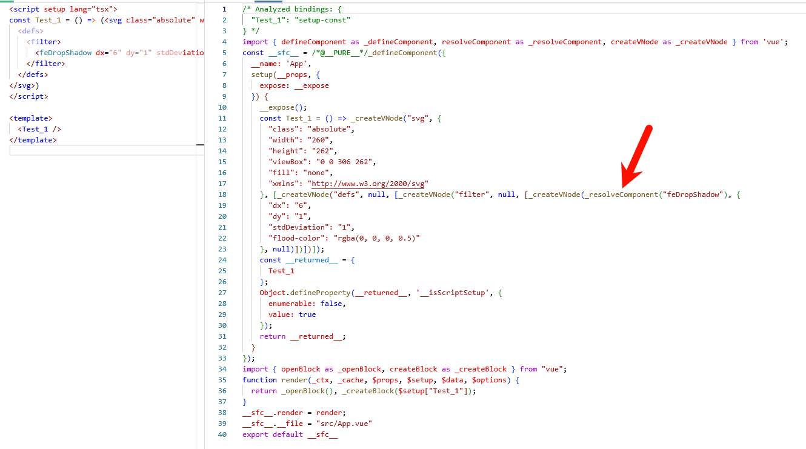

首页
[Vue warn]: Failed to resolve component: feDropShadow 的pr解决之路
ts
[Vue warn]: Failed to resolve component: feDropShadow If this is a native custom element, make sure to exclude it from component resolution via compilerOptions.isCustomElement.
刚刚看见了这个警告，但 feDropShadow 应该要被视作原生svg元素的 (
https://developer.mozilla.org/zh-CN/docs/Web/SVG/Element/feDropShadow
)，
按照文档
https://vuejs.org/api/application#app-config-compileroptions-iscustomelement
中所说的 svg 元素不需要在 app.config.compilerOptions.isCustomElement 中匹配
定位问题
我查看 vue 的源码，发现
https://github1s.com/vuejs/core/blob/main/packages/shared/src/domTagConfig.ts#L18
中有定义
feDropShadow
为
SVG_TAGS
然后又查看实际编译的代码如下：对svg的处理和 feDropShadow 不一致，看来问题就在编译这个地方了

然后我去 vue
Vue SFC Playground - 示例
中尝试，发现他的编译是正确的，再回头看我的代码发现我是使用的
<script setup lang="tsx">
里面使用的
再尝试
Vue SFC Playground - 新的示例
成功复现了问题，也就是问题出现在了jsx 的编译

继续查看 vue 编译 jsx 代码的项目
https://github.com/vuejs/babel-plugin-jsx
的代码
定位到判断代码在
https://github1s.com/vuejs/babel-plugin-jsx/blob/main/packages/babel-plugin-jsx/src/utils.ts
其中
checkIsComponent
的判断逻辑有
!svgTags.includes(tag)
svgTas 是引用的一个 npm 库
svg-tags
（这个项目的最后一次更新是八年前了），还记得前面 vue-core 的代码是自定义了
SVG_TAGS
，这就是为什么写在 jsx 中和 template 中编译结果不一致的原因了。
解决问题
显然的方案是去给
svg-tags
提交 pr，查看 pr 列表发现已经有了，如果合并了
Support SVG 2 elements
就可以解决这个问题，但这个 16 年的现在也没有被合并所以我认为还是从 babel-plugin-jsx 下手比较好
于是我发起了一个 pr：
https://github.com/vuejs/babel-plugin-jsx/pull/745